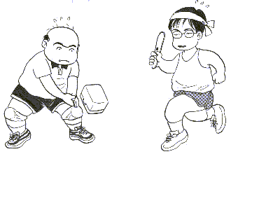

Monolog 独白 ・
（５）更新

「麻雀祭都、大変楽しみにしております。いつまでも続いて欲しいと思っております。しかし失礼ながら、これほど更新のスピードが早いと、数ヶ月で更新がストップしてしまうのではないかと、心配になってきます・・・・」
そこでそんなメールにお答えがてら、最近の心境などを。
もともとＨＰに関するノウハウなどまるで無い。で、オープン時点では、漠然と週１ペースが目標とは書いたものの、実際どの程度の頻度で更新できるか、まるっきり不明でスタートした。
それでも最初のうちは少しでもＨＰノウハウを身につけるため、あるいはもうちょっとコンテンツを充実させなくてはという気持ちで、ちょっと頑張った。
少し経って、「とりあえずこれくらいなら、あとは週１程度の更新でも十分かな？」という程度になった。しかし別にＨＰ、週１ペースという規則があるわけではない。
じゃぁ、書けるときにどんどん書いとけ。書くことが無くなったら、それはそのときの話。あとは野となれ山となれ。（笑）
というわけで、とりあえず今は先のことは考えていない(^-^；